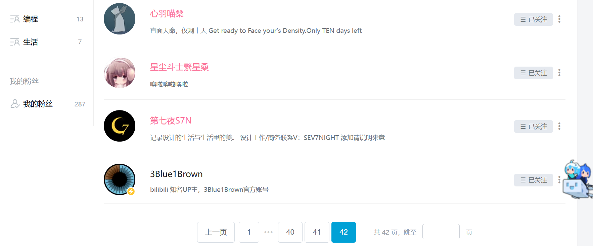

B 站历险记-
本文练习速写
看到一个贴子很有意思，想到自己也在 Bilibili 逛了这么久，值得记录一下相关关注和浏览的历史
最开始注册账号，记得是因为想看 3B1B (当时对于上油管还没有太大感情)。 在此之前在同学交流中听说过这个网站，感觉是一个奇异（我可能还不知道二次元）文化的聚落，因此也不想看， 而 3B1B 大概是在知乎上读到的。总之发现原来上面有这么多资源非常惊讶，同时发现这个自称二次元的世界是一个包容开放的领地， 顿时注册进入这个此后日新月异的视频网站。
开局因为知识区，此后自然口味很刁（我总是对于一些事物有自己高傲的理解） 关注的偏向文学和真正的创意。
后来对于一些展示生活感到兴趣（纪录片性质），但从来不愿意看一些自认为低俗的内容，像舞蹈类我只因为艺术性去鉴赏。
是知道很后来才在排行榜上知道了鬼畜，然后在有一段很无聊的岁月 （可能是疫情开始前后刷了很多相关类似，现在感到当时正是极大破坏了原来比较稳固的内心，只是也被动打破了自己的心胸） 看了很多最开始我所不耻的娱乐视频，同期也刷了很多影视解说。1
至今我也对动漫毫无感觉。
记得以前大量看的是从国外翻译转载的内容，每次看到国内的基本只看精华的内容，口中只食佳味。遗憾的是当时没有比较新近的内容
最开始看的很多是一些系列性的内容（有点从优酷看逻辑思维），记得看了很多一个人介绍建筑的视频
总结一些当下 影视飓风； 可汗（如今已不如当初）
国际认知：
- (国际联合国)导盲犬
- 温竣岩
- 玉渊谭天
- 种豆包 Chong(日本)
转载：
- 冲浪误入深水区
资源： Web3 天空之城
学习： 泰勒猫；
科技：
- 码农高手
- 林亦 LYi
- 两颗皮蛋
休闲思考；
- 海妖客厅
- 这是个令人疑惑的星球
主题：
音乐剧
- 老菜音乐摊（翻唱）
- 许多资源，如：九九想吃大桃子、風菌子
魔术： (不想再找了)有刘谦、简、（上海一个喜欢摇铃铛 UP）
F1:
- 村长托马斯
- (当年各种转载)
(考古、财经（阿 Test 正经比比/）、音乐、神经科学)
讲座：一席精选、（另一个记录生活很精致，讲了许多手艺）
历史、影视解说： 历史调研室、木鱼水心
游戏开发： 关于从业认识的故事，还有游戏本身的特性历史
建筑： 北京金山上
小众 up(我想我用周报形式正是记录他们最好的形式): 如：业夕、ZZ 赵之汋
孙熙然
马克白兰地
最初的关注列表： 
曾经对我产生很大影响的 up
- 3Blue1Brown
- 艺术与设计史
- YJango
- 汤质看本质
- …
- kedamoguya
- 黄鸭
- 小说家
- …
- 半佛
- …
- 王木头学科学
- 地球知识局
- …
- 波士顿圆脸
- 漫士沉思录
- 啊粥粥啊粥
- 是玉木呀
- 摸鱼的熊彼得
中间一段是长长对文学的关注，受各种精神养料滋养
很多人的风格我已经不再喜欢，有点不更新了。 但无不记录了当时一段对于某个领域的好奇探索，我的确看得很广～
甚至还有的我没更新，只是当年就常常发现。很长时间，我是不看推送的，一般都是直接搜索想要的内容（往往提前知道是什么）
如今很难了，一是常常疲惫于是刷首页，然后越来越多低质量进入眼帘，二来很少查到很棒的内容。
不过有一点是不变的，就是我喜欢深入的长视频，把一个具体的问题说明白，而不是作秀。
Footnotes:
就是当时看了 Python 和 html 相关，和现在正好圆回来了